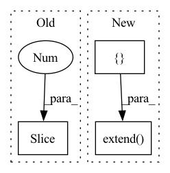

Pattern ID :41605

Before Change
coarse_samples, coarse_lengths = validSampler(
valid_pixels, valid_coords, train_cam_tf, sample_ray_num, coarse_sample_pnum, 200, 200, train_focal, near_t, far_t
)
coarse_cams = coarse_samples[:, -1, :-3].contiguous()
gt_rgb = coarse_samples[:, -1, -3:].contiguous()
coarse_samples = coarse_samples[:, :-1, :].contiguous()
coarse_rgbo = coarse_net.forward(coarse_samples)
After Change
render_timer.tic()
coarse_result = render_image(coarse_net, train_cam_tf[0], 200, test_focal, near_t, far_t, fine_sample_pnum)
train_result = render_image(fine_net, train_cam_tf[0], 200, test_focal, near_t, far_t, fine_sample_pnum)
test_results = []
test_loss = torch.zeros(1).cuda()
for i in range(4):
test_result = render_image(fine_net, test_cam_tf[i * 10], 200, test_focal, near_t, far_t, fine_sample_pnum)
test_results.append(test_result)
test_loss += loss_func(test_result, testset[i * 10].cuda())
render_timer.toc()
eval_timer.toc()
writer.add_scalar("Test Loss", loss, test_cnt)
print("Evaluation in epoch: %4d / %4d\t, test counter: %d test loss: %.4f\taverage time: %.4lf\tavg render time:%lf\tremaining eval time:%s"%(
ep, epochs, test_cnt, test_loss.item() / 2, eval_timer.get_mean_time(), render_timer.get_mean_time(), eval_timer.remaining_time(epochs - ep - 1)
))
images_to_save = [coarse_result, train_result]
images_to_save.extend(test_results)
save_image(images_to_save, "./output/result_%03d.png"%(test_cnt), nrow = 3)
// ======== Saving checkpoints ========
torch.save({
"model": coarse_net.state_dict()},
In pattern: SUPERPATTERN
Frequency: 3
Non-data size: 3
Instances
Fragment ID: 116909415
Project Name: enigmatisms/nerf
Commit Name: 5bf2199afe3d4eff27be923b0e6d62a3118af597
Time: 2022-04-13
Author: 984041003@qq.com
File Name: train.py
M Class Name: AnonimousClass
N Class Name: AnonimousClass
M Method Name: main(0)
N Method Name: main(0)
M Parent Class:
N Parent Class:
M File Name: train.py
N File Name: train.py
M Start Line: 66
M End Line: 188
N Start Line: 73
N End Line: 196
'>
Before Change
pixels = pixels.copy()
pixels.sort()
B[i,j] = pixels[r]
return B[1:-1,1:-1]
def test_rank_filter():
np.random.seed(22)
A = np.random.random_integers(0,255, (32,32))
After Change
e0 = min(A.shape[0], i + 2)
e1 = min(A.shape[1], j + 2)
pixels = list(A[s0:e0, s1:e1].ravel())
pixels.extend([0] * (9-len(pixels)))
pixels.sort()
B[i,j] = pixels[r]
return B
'>
Fragment ID: 116909409
Project Name: luispedro/mahotas
Commit Name: 3035cc365d6a2d4a379212b158eb577cdd2bd39c
Time: 2012-11-28
Author: luis@luispedro.org
File Name: mahotas/tests/test_median_filter.py
M Class Name: AnonimousClass
N Class Name: AnonimousClass
M Method Name: _slow_rank_filter(2)
N Method Name: _slow_rank_filter(2)
M Parent Class:
N Parent Class:
M File Name: mahotas/tests/test_median_filter.py
N File Name: mahotas/tests/test_median_filter.py
M Start Line: 13
M End Line: 19
N Start Line: 13
N End Line: 23
'>
Before Change
if terminal:
game_iters += 1
score_history.append(score)
avg_score = np.mean(score_history[-100:])
if avg_score > best_score:
best_score = avg_score
After Change
// env=env,
// )
cumulative_rewards = []
buffer.clear()
while len(buffer) < N:
actions = agent.get_actions(observations, env=env, re_format="sample", as_numpy=True)
actions = batch_numpy_actions(actions, env)
next_observations, rewards, dones, truncated, infos = env_batch_step(env, actions)
// observation_, reward, done, truncated, info = env.step(actions)
// terminal = done or truncated
terminals = np.logical_or(dones, truncated)
n_steps += 1
// score += reward
score += np.sum(rewards)
finished_trajectories = agent_history_maps.update_trajectories_(
observations=observations,
actions=actions,
rewards=rewards,
terminals=terminals,
next_observations=next_observations,
)
// finish_trajectories(trainer, finished_trajectories)
trainer._update_gen_trajectories_finished_trajectories(finished_trajectories)
observations = next_observations
if all(terminals):
game_iters += 1
cumulative_rewards.append(score)
if avg_score > best_score:
best_score = avg_score
observations, info = env_batch_reset(env)
score = 0
// finish_trajectories(trainer, agent_history_maps.propagate_all())
trainer._update_gen_trajectories_finished_trajectories(agent_history_maps.propagate_all())
score_history.extend(cumulative_rewards)
avg_score = np.mean(cumulative_rewards)
std_score = np.std(cumulative_rewards)
print(
f"iteration: {iteration}, "
'>
Fragment ID: 116909416
Project Name: neurotorch/neurotorch
Commit Name: 198788020cc23b8cba6fed918112de1ff32fb3ba
Time: 2022-12-15
Author: 50332514+JeremieGince@users.noreply.github.com
File Name: tutorials/reinforcement_learning/ppo_from_youtube.py
M Class Name: AnonimousClass
N Class Name: AnonimousClass
M Method Name: main(0)
N Method Name: main(0)
M Parent Class:
N Parent Class:
M File Name: tutorials/reinforcement_learning/ppo_from_youtube.py
N File Name: tutorials/reinforcement_learning/ppo_from_youtube.py
M Start Line: 357
M End Line: 428
N Start Line: 356
N End Line: 449